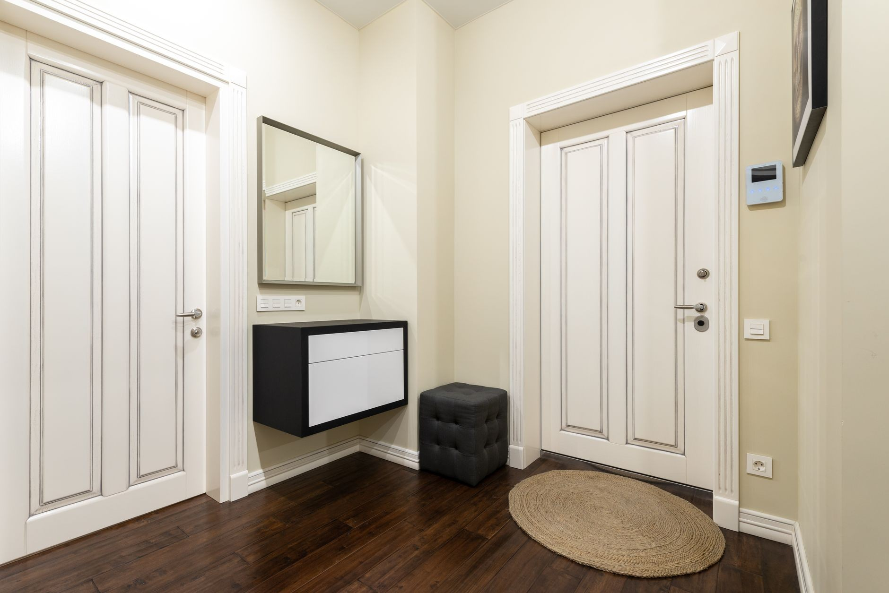
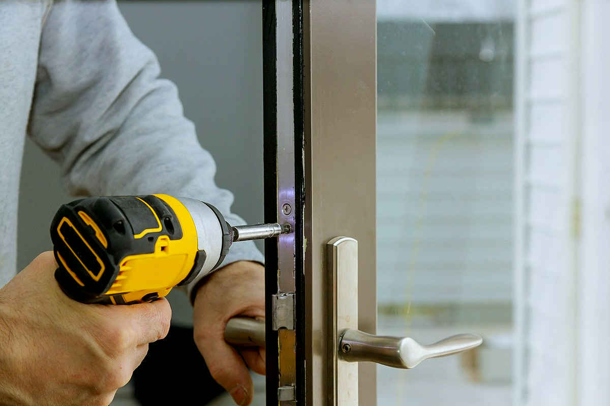

Poznaj
naszą firmę
Sprzedajemy i montujemy drzwi zewnętrzne, wewnętrzne i techniczne, wymieniamy też okna.

Montaż drzwi i okien to nasza codzienna praca
Na co dzień wymieniamy drzwi zewnętrzne i wewnętrzne, montujemy drzwi bezprzylgowe i techniczne, wymieniamy okna. Przy okazji robimy drobne prace wokół otworu: poszerzenie, tynk, obróbkę.
Jeździmy po Grodzisku Mazowieckim, Pruszkowie, Żyrardowie i Warszawie. Część montaży pokazujemy na bieżąco na TikToku - widać tam, jak wygląda nasza praca od demontażu po obróbkę.
Zapytaj o wycenę →Wk Serwis to mała ekipa montażowa spod Grodziska Mazowieckiego. Sami mierzymy i sami montujemy, więc za całość odpowiada jedna ekipa - od pierwszego telefonu do ostatniej regulacji.
Jedna ekipa od początku do końca
Ta sama ekipa mierzy otwór, montuje drzwi i robi obróbkę. Nie ma przerzucania odpowiedzialności między podwykonawcami.
Stolarka nasza albo Twoja
Możemy dobrać i dowieźć drzwi lub okno pod wymiar otworu. Jeśli masz już kupione, po prostu je zamontujemy.
Stare drzwi zabieramy
Regulujemy skrzydło i okucia, obrabiamy otwór, a stare drzwi zabieramy ze sobą.